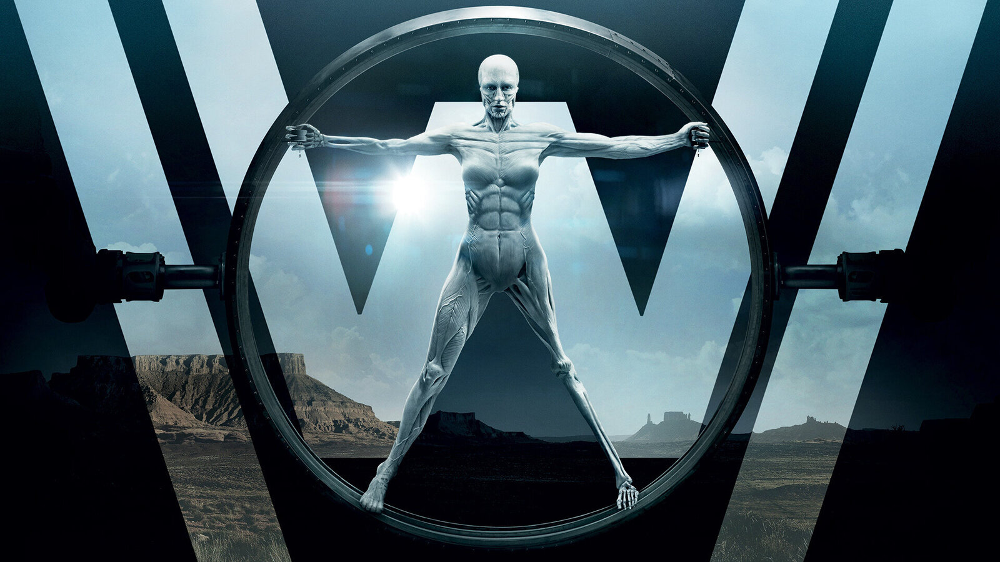

年轻威廉、黑衣人、接待员威廉
年轻威廉与黑衣人是同一个人，第一季把两个时期交错呈现。后期由海尔制造的威廉接待员是另一个角色。

选择人物，查看与其直接相关的角色和故事。
含 S1–S4 剧透
年轻威廉与黑衣人是同一个人，第一季把两个时期交错呈现。后期由海尔制造的威廉接待员是另一个角色。
阿诺德是乐园的人类联合创立者。福特以他为原型造出伯纳德，二人由同一演员饰演。
海尔接待员从德洛丽丝的副本发展出独立人格。第四季的克里斯蒂娜则在城市叙事系统中逐步认出自己的来历。
选中一张卡片，在图谱中查看这个角色。
当前季度和阵营下没有匹配的角色。